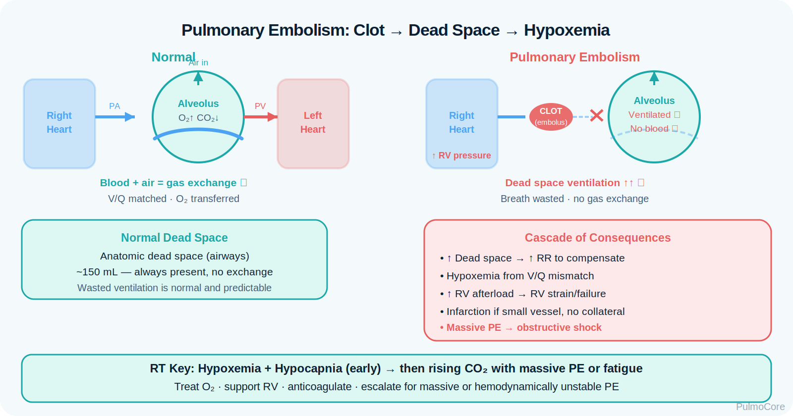
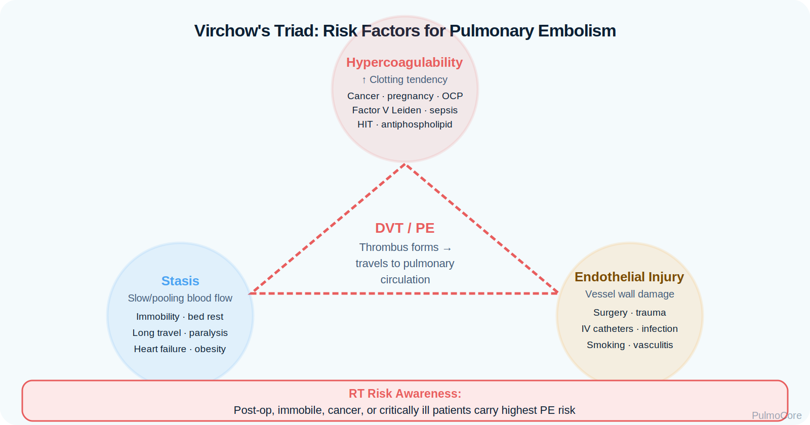
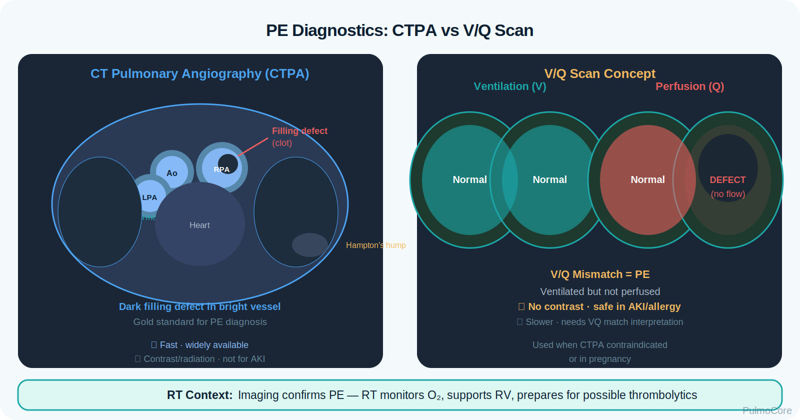

Loading courses...Progress status will appear here.
Respiratory Disease Module
Pulmonary Embolism
Pulmonary embolism is an obstructive pulmonary vascular emergency where a clot blocks blood flow through part of the pulmonary circulation. This module focuses on RT-level recognition, V/Q mismatch, hypoxemia, dead space ventilation, diagnostic interpretation, oxygen and ventilatory support, escalation, and prevention of deterioration.
Category Pulmonary Vascular Disease
Estimated Time 30–40 minutes
Level Core RT Knowledge
Learning Objectives
By the end of this pulmonary embolism module, learners should be able to connect clot formation, pulmonary vascular obstruction, gas exchange changes, assessment data, diagnostic priorities, management decisions, and escalation triggers.
1. Explain pathophysiology Describe how a thromboembolus blocks pulmonary blood flow and creates increased dead space, V/Q mismatch, hypoxemia, and right ventricular strain.
2. Recognize PE patterns Identify high-yield clues including sudden dyspnea, pleuritic chest pain, tachycardia, tachypnea, hypoxemia, and risk factors such as immobilization or DVT.
3. Interpret diagnostic data Use ABGs, SpO₂, D-dimer context, CT pulmonary angiography, V/Q scan, ECG, troponin/BNP, and echocardiography to support clinical reasoning.
4. Escalate appropriately Recognize massive PE danger signs such as hypotension, syncope, shock, severe hypoxemia, altered mental status, and right heart failure.
Video Overview
2-Minute Pulmonary Embolism Overview
Watch this quick overview before moving into the disease snapshot.
Disease Snapshot
Pulmonary embolism occurs when embolic material, most often a thrombus from the deep veins of the legs or pelvis, lodges in the pulmonary arterial circulation. The immediate respiratory problem is perfusion loss to ventilated alveoli, which creates wasted ventilation and can rapidly worsen oxygenation, ventilation efficiency, pulmonary pressures, and cardiac output.
What it is: Obstruction of pulmonary arterial blood flow, usually by a venous thromboembolus.
Primary problem: Ventilated alveoli receive little or no perfusion, increasing physiologic dead space.
Key diagnostic clue: CT pulmonary angiography showing an intraluminal filling defect in the pulmonary arteries.
Acute danger: Hypotension, syncope, shock, severe hypoxemia, or evidence of right ventricular strain.
RT priority: Assess oxygenation, ventilation, work of breathing, hemodynamics, response to oxygen, and need for escalation.
RT Clinical Connection
For RTs, PE is not just a clot problem. It is a sudden gas exchange and cardiopulmonary load problem. The RT must recognize unexplained hypoxemia, tachypnea, increased dead space, respiratory alkalosis, and signs that the right heart is failing.
Board Prep Frame
Immediately associate PE with sudden dyspnea, pleuritic chest pain, tachycardia, tachypnea, risk factors for DVT, increased dead space, respiratory alkalosis early, CT pulmonary angiography, anticoagulation, and thrombolysis/embolectomy for unstable massive PE.
Quick Pre-Check
Start with the core PE pattern
Which statement best describes the core gas exchange problem in pulmonary embolism?
Anatomy & Pathophysiology
Most pulmonary emboli begin as venous thrombi. When a clot travels through the right heart and lodges in the pulmonary arteries, it blocks perfusion to lung units that may still be ventilated. This creates high V/Q regions and increased physiologic dead space. Larger emboli can also increase pulmonary vascular resistance and strain the right ventricle.

Visual placeholder: Use this image to show clot migration from DVT to the pulmonary artery, blocked perfusion, dead space ventilation, and right ventricular strain.
Venous clot formation → embolus travels to pulmonary arteries → perfusion obstruction → high V/Q and increased dead space → hypoxemia/tachypnea → increased pulmonary vascular resistance → right ventricular strain → possible shock.
What Changes During a Pulmonary Embolism
PE Change
What Happens
Why It Matters
Pulmonary artery obstruction
A clot blocks blood flow to part of the lung.
Ventilation continues but perfusion decreases or stops.
Increased dead space
Air reaches alveoli that are not adequately perfused.
Ventilation becomes inefficient and tachypnea often develops.
V/Q mismatch
Perfusion is uneven across lung units.
Hypoxemia may occur despite oxygen therapy.
Increased pulmonary vascular resistance
The right ventricle must pump against a higher afterload.
Large PE can cause RV strain, decreased preload to the left heart, hypotension, and shock.
Compensatory hyperventilation
The patient breathes faster because of hypoxemia, pain, and dead space.
Early ABG may show respiratory alkalosis with low PaCO₂.
ABG Progression Concept
Early PE commonly produces tachypnea with low PaCO₂ and respiratory alkalosis. Hypoxemia may be present because perfusion is blocked and V/Q matching is disrupted. A normal or rising PaCO₂ in a distressed PE patient is concerning because it can indicate fatigue, worsening ventilation, or impending failure.
Danger Sign
Hypotension or syncope with suspected PE should be treated as a possible massive PE until proven otherwise. This is a circulation threat, not just an oxygen problem.
Click the PE Hotspots
Click each hotspot to reveal how that structure contributes to pulmonary embolism.
Start here: Click all four hotspots to complete this activity.
0 / 4 hotspots reviewed
Etiology, Risk Factors & Prevention
Most pulmonary emboli are part of venous thromboembolism. Risk increases when venous blood flow slows, clotting tendency increases, or vessel injury occurs. Clinically, this is often organized around Virchow’s triad: stasis, hypercoagulability, and endothelial injury.

Visual placeholder: Use this image to connect immobilization, surgery, malignancy, pregnancy, estrogen therapy, trauma, and prior VTE to PE risk.
Risk Category
Examples
RT/Clinical Relevance
Venous stasis
Immobility, long travel, bed rest, paralysis, heart failure.
Ask about recent immobility when sudden dyspnea appears unexplained.
Raises suspicion even when lung exam is relatively clear.
Endothelial injury
Surgery, trauma, central venous catheters, fractures.
Post-op dyspnea + tachycardia should trigger PE thinking.
DVT clues
Unilateral leg swelling, pain, warmth, redness.
Supports venous source of embolus.
Sort the PE Factors
Choose the best category for each item, then check your answers.
Recent hip surgery
CT pulmonary angiography
Unilateral leg swelling after long travel
Hypotension with syncope
Elevated D-dimer in a low/intermediate probability patient
Complete the sorting activity to continue.
Clinical Manifestations
PE presentation can be subtle or catastrophic. Lung sounds may be clear, so RTs should not wait for wheezing or crackles to suspect a serious pulmonary problem. The pattern is often sudden dyspnea with tachypnea, tachycardia, hypoxemia, pleuritic pain, and a risk factor history.
Finding Type
What the RT May See
Symptoms
Sudden dyspnea, pleuritic chest pain, cough, anxiety, hemoptysis, syncope in severe cases.
Appearance
Tachypnea, distress, diaphoresis, restlessness, or altered mental status if severe.
Breath sounds
Often clear or nonspecific; crackles, wheeze, or pleural rub may occur.
Oxygenation clues
Low SpO₂, low PaO₂, increased oxygen requirement, desaturation with exertion.
Ventilation clues
Low PaCO₂ early due to hyperventilation; rising PaCO₂ is concerning.
Circulation clues
Tachycardia, hypotension, syncope, jugular venous distention, signs of shock in massive PE.
Important Teaching Point
A PE patient may have clear breath sounds and a normal chest x-ray. Do not rule out PE just because auscultation is not dramatic.
Diagnostics & Assessment
Diagnostic reasoning starts with clinical probability and risk factors. RTs do not diagnose PE independently, but they often recognize the pattern, report deterioration, support oxygenation and ventilation, and help interpret gas exchange trends.
High-Yield PE Diagnostics
Test or Data
PE Pattern
Board-Prep Caution
ABG
Respiratory alkalosis with hypoxemia is common early.
A normal ABG does not fully exclude PE.
D-dimer
May be elevated when clot breakdown is present.
Useful to help rule out PE in low/intermediate probability; nonspecific when elevated.
CT pulmonary angiography
Often first-line imaging when appropriate; shows pulmonary arterial filling defect.
Consider renal function/contrast issues.
V/Q scan
Ventilation-perfusion mismatch pattern.
Often used when CTPA is contraindicated or in selected patients.
Chest x-ray
Often normal or nonspecific.
Helps rule out other causes such as pneumonia or pneumothorax.
ECG
Tachycardia, right heart strain patterns may occur.
ECG is not definitive for PE.
Troponin/BNP
May rise with RV strain.
Suggests higher-risk PE when elevated in context.
Echocardiography
Can show RV dilation/strain.
Useful in unstable patients when massive PE is suspected.
Lower extremity ultrasound
May find DVT source.
Supports VTE diagnosis if PE imaging is delayed or contraindicated.

Visual placeholder: Use this image to compare CTPA clot visualization with V/Q mismatch testing.
ABG Patterns
Pattern
Meaning
Low PaCO₂ with tachypnea
Common early hyperventilation response.
Low PaO₂ or increased A-a gradient
V/Q mismatch and impaired oxygenation.
Normal PaCO₂ in severe distress
Concerning if the patient is tiring.
Rising PaCO₂ with altered mental status or shock
Possible ventilatory failure or severe decompensation.
Risk Stratification & PE Severity
PE severity is driven by hemodynamic stability, right ventricular strain, oxygenation, clot burden, and clinical deterioration. The most urgent distinction is whether the patient is stable or unstable.
Category
Typical Pattern
Why It Matters
Low-risk PE
Hemodynamically stable; no major RV strain markers.
Anticoagulation and monitoring are typical priorities.
Intermediate-risk / submassive PE
Stable blood pressure but evidence of RV strain or biomarker elevation.
Requires closer monitoring for decompensation.
High-risk / massive PE
Hypotension, shock, syncope, or cardiac arrest risk.
Requires urgent escalation; thrombolysis or embolectomy may be considered.
Stable Normal blood pressure, manageable oxygen need, no shock signs.
Unstable Hypotension, syncope, shock, severe hypoxemia, altered mental status.
Risk Stratification Activity
A patient with suspected PE has sudden dyspnea, SpO₂ 86% on room air, HR 132/min, BP 82/48, and new confusion. Which risk category is most appropriate?
Severity & Red Flags
The key question is not simply “Could this be a PE?” The key question is whether the PE is causing oxygenation failure, right ventricular failure, shock, or impending arrest.
Red Flag
Why It Matters
Hypotension or shock
Suggests massive PE with obstructive shock physiology.
Syncope
May indicate transient severe obstruction or hemodynamic collapse.
Severe or worsening hypoxemia
Shows significant gas exchange impairment and possible decompensation.
Altered mental status
May reflect hypoxemia, low perfusion, or impending arrest.
Right ventricular strain
Indicates higher cardiopulmonary risk.
Cardiac arrest with PEA
PE is a reversible cause to consider in pulseless electrical activity.
Management & Treatment
PE management depends on clinical stability. Treatment often includes anticoagulation to prevent clot extension while the body breaks down clot. Unstable high-risk PE requires urgent escalation for reperfusion strategies. RT support focuses on oxygenation, ventilation support when needed, monitoring, and rapid communication of deterioration.
Treatment Categories
Intervention
Why It Helps
RT-Relevant Notes
Oxygen therapy
Corrects hypoxemia from V/Q mismatch.
Escalate device based on SpO₂, WOB, and clinical status.
Anticoagulation
Prevents clot extension and new clot formation.
Monitor for bleeding precautions and coordinate procedures safely.
Thrombolytic therapy
Breaks down clot more rapidly.
Typically considered in unstable high-risk PE when benefits outweigh bleeding risk.
Catheter-directed therapy or embolectomy
Mechanical or targeted clot removal/lysis.
May be used when massive PE or contraindications require advanced intervention.
IVC filter
Reduces embolization from lower extremity clot source.
Considered when anticoagulation is contraindicated or recurrent emboli occur despite therapy.
Ventilatory support
Supports respiratory failure or arrest.
Use caution: positive pressure can reduce venous return in unstable RV failure.
Acute PE Management Sequence
Select the steps in the best general order for a suspected unstable PE presentation.
Assess ABCs, SpO₂, WOB, perfusion, and hemodynamics
Apply oxygen and titrate support
Notify provider/rapid response for suspected unstable PE
Support diagnostic workup
Anticoagulation as ordered if no contraindication
Escalate to reperfusion therapy if massive PE/poor response
Complete the sequence activity to continue.
Massive PE & Ventilatory Considerations
Massive PE is a hemodynamic emergency. The clot burden increases pulmonary vascular resistance, strains the right ventricle, reduces left ventricular filling, and may cause obstructive shock. Oxygenation support is important, but circulation and RV failure drive the most urgent threat.
Watch for: Hypotension, syncope, shock, severe hypoxemia, altered mental status, PEA arrest.
Vent goal: Support oxygenation/ventilation while avoiding unnecessary increases in intrathoracic pressure.
Escalation concept: Unstable PE may require thrombolysis, catheter therapy, surgical embolectomy, or ECMO-level support depending on facility resources.
Board Pearl
Do not treat massive PE as a simple hypoxemia question. The board-style priority often hinges on unstable circulation: hypotension, shock, RV strain, and need for urgent provider notification and advanced reperfusion therapy.
Respiratory Therapist Role
The RT is central to recognizing unexplained hypoxemia, escalating oxygen delivery, monitoring ventilation trends, preparing for transport or imaging support, assisting with decompensation, and communicating sudden changes in cardiopulmonary status.
RT Task
What to Assess or Do
Why It Matters
Assess oxygenation
SpO₂, PaO₂, oxygen device/settings, response to escalation.
Detects worsening V/Q mismatch and need for higher support.
Assess ventilation
RR, pattern, PaCO₂ trend, ETCO₂ if available, fatigue, mental status.
Identifies ineffective ventilation or impending failure.
Evaluate hemodynamics
HR, BP, perfusion, syncope, shock signs.
Massive PE is primarily life-threatening because of obstructive shock.
Support diagnostics
ABG collection, oxygen during imaging/transport, communication of instability.
Helps speed diagnosis while keeping the patient safe.
Prepare escalation
Rapid response, advanced airway support, code readiness, team communication.
PE can deteriorate quickly, especially with RV failure.
Guided Unfolding Case Study
The Clear Lungs That Were Not Fine
This guided case reveals one clinical stage at a time. Learners make an RT decision, receive feedback, and then continue to the next stage.
Stage 1: Initial Presentation
A 47-year-old patient arrives with sudden shortness of breath and sharp chest pain that worsens with inspiration. They returned from a 10-hour car trip yesterday.
RR 30/min
SpO₂ 88% on room air
Breath Sounds Clear but diminished effort
Decision Question: What is the RT priority?
Stage 2: ABG and Assessment
On 4 L/min nasal cannula, SpO₂ improves to 92%. ABG: pH 7.49, PaCO₂ 29 mm Hg, PaO₂ 62 mm Hg. HR is 124/min.
Decision Question: How should this ABG pattern be interpreted?
Stage 3: Imaging Result
CT pulmonary angiography shows a filling defect in the right pulmonary artery. The patient is still tachycardic but blood pressure is 126/78.
Decision Question: Which treatment category is typically expected if no contraindication exists?
Stage 4: Sudden Decompensation
The patient becomes pale and diaphoretic. BP drops to 78/44, HR 142/min, SpO₂ 84% despite nonrebreather mask. They are confused.
Decision Question: What does this change suggest?
Case Wrap-Up
RT Takeaway: PE can present with clear lungs but severe gas exchange and circulation problems. Sudden unexplained hypoxemia plus tachypnea/tachycardia and risk factors should trigger PE thinking.
If the patient worsens: hypotension, syncope, altered mental status, severe hypoxemia, or signs of RV strain suggest massive PE and require urgent escalation.
Knowledge Check
Board-Style Practice
Answer each question to complete this activity. Answer choices shuffle each time the lesson opens.
Question 1
A patient suddenly develops dyspnea, pleuritic chest pain, tachycardia, and hypoxemia after recent surgery. Breath sounds are mostly clear. Which diagnosis should be strongly considered?
Question 2
Which ABG pattern is commonly associated with early pulmonary embolism?
Question 3
Which finding most strongly suggests massive PE requiring urgent escalation?
Question 4
Which intervention is typically used to prevent clot extension and new clot formation in stable PE when no contraindication exists?
0 / 4 questions answered
FAQ
Common Pulmonary Embolism Questions
What is the simplest way to understand PE?
PE is a blood flow blockage in the pulmonary arteries. Air may reach the alveoli, but blood flow cannot, so ventilation is wasted and gas exchange becomes inefficient.
Why can breath sounds be clear in PE?
PE is primarily a perfusion problem, not an airway secretion or bronchospasm problem. The alveoli may still be ventilated, so lung sounds can be normal or nonspecific.
Why is PaCO₂ often low early?
Patients often hyperventilate because of hypoxemia, pain, anxiety, and increased dead space. This can produce respiratory alkalosis.
Does a normal chest x-ray rule out PE?
No. Chest x-ray can be normal in PE. It is often used to evaluate other causes of dyspnea or chest pain.
What makes PE massive?
Massive or high-risk PE is defined by hemodynamic instability such as hypotension, shock, syncope, or arrest risk, often related to right ventricular failure.
What is the RT’s role during suspected PE?
The RT supports oxygenation/ventilation, monitors deterioration, helps obtain and interpret ABGs, assists during transport or imaging, and communicates instability quickly.
Why is positive pressure used carefully in unstable PE?
Positive pressure can reduce venous return and worsen hemodynamics in RV failure, so ventilatory support must be carefully managed with the team.
Summary & Clinical Pearls
Pulmonary embolism is a pulmonary vascular obstruction that creates dead space ventilation, V/Q mismatch, hypoxemia, tachypnea, and possible right ventricular strain. Stable PE is commonly treated with anticoagulation, while unstable high-risk PE requires urgent escalation for reperfusion strategies and hemodynamic support.
Must know: PE is usually a perfusion problem: ventilated alveoli may not receive blood flow.
Board pearl: Sudden dyspnea + pleuritic pain + tachycardia + risk factors = think PE, even with clear lungs.
RT pearl: Assess SpO₂, PaO₂, PaCO₂ trend, WOB, ETCO₂ if available, HR/BP, and mental status.
Common mistake: Do not dismiss PE because chest x-ray or breath sounds are not dramatic.
Glossary System
Tooltip, searchable glossary, and mastery deck
Searchable Glossary
Terms are stored once and can power inline tooltips, glossary entries, and flashcards.
Glossary Flashcard Mastery Deck
Click the card to flip it. Use Term → Definition or Definition → Term mode. Mark known cards to move them into the completed pile.